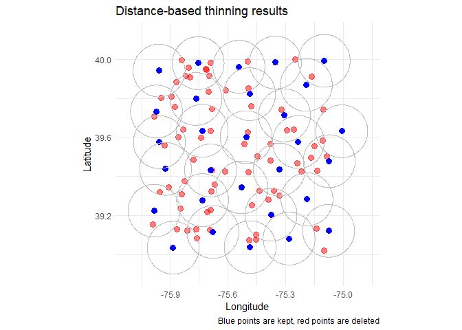
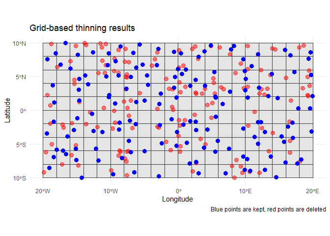
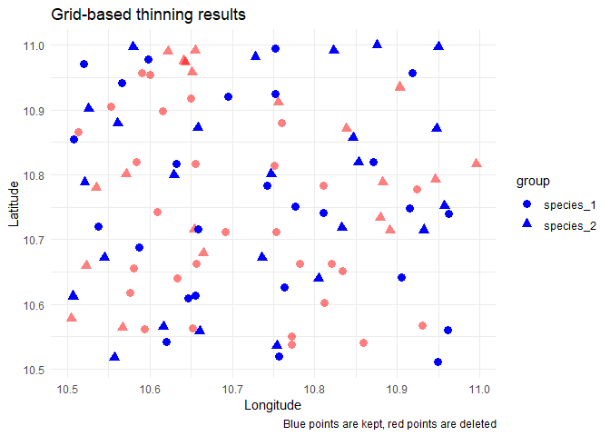

Overview
GeoThinneR is an R package designed for spatial thinning of species occurrences and other types of geospatial point data. It offers a collection of thinning methods, including distance-based, grid-based, and precision-based algorithms. Whether you’re working on species distribution models (SDMs), ecological niche modeling, or managing biodiversity datasets, GeoThinneR provides tools that can help you correct sampling bias, reduce spatial autocorrelation, and improve model performance. Users can choose between different thinning algorithms depending on their specific needs, including the ability to perform thinning using a grouping variable, to specify a target number of points, or to apply preference filtering based on uncertainty or other criteria.
Installation
You can install GeoThinneR from CRAN using the following command:
install.packages("GeoThinneR")To install the development version of GeoThinneR from GitHub, use:
# install.packages("devtools")
devtools::install_github("jmestret/GeoThinneR")How to Use GeoThinneR
The documentation can be found at https://jmestret.github.io/GeoThinneR/. Below are some examples demonstrating how to use the package for different spatial thinning methods.
Example 1: Distance-based thinning
In this example, we will use the brute force method to thin points based on a specified distance:
library(GeoThinneR)
# Simulated data (longitude, latitude)
set.seed(1234)
sim_data <- data.frame(long = runif(100, -76, -75), lat = runif(100, 39, 40))
# Thinning the points with a distance of 30 km
thin_distance <- thin_points(
data = sim_data,
method = "brute_force",
thin_dist = 15,
trials = 50,
seed = 1234
)
# View the number of kept points
nrow(thin_distance[[1]])
#> [1] 29
Example 2: Grid-based thinning with a raster file
In this example, we will use a grid sampling method with a raster file to thin the data:
library(GeoThinneR)
library(terra)
# Create a raster object
rast_obj <- rast(xmin = -20, xmax = 20, ymin = -10, ymax = 10, res = 2)
# Simulated data (longitude, latitude)
set.seed(1234)
sim_data <- data.frame(long = runif(300, -20, 20), lat = runif(300, -10, 10))
# Perform grid-based thinning
thin_grid <- thin_points(
data = sim_data,
method = "grid",
raster_obj = rast_obj,
trials = 50,
seed = 1234
)
# View the number of kept points
nrow(thin_grid[[1]])
#> [1] 149
Example 3: Precision-based thinning with grouping variable
In this example, we will perform precision-based thinning while considering a grouping variable:
library(GeoThinneR)
# Simulated data with a grouping variable
set.seed(1234)
sim_data <- data.frame(
long = runif(100, 10.5, 11),
lat = runif(100, 10.5, 11),
group = sample(c("species_1", "species_2"), 100, replace = TRUE)
)
# Perform precision-based thinning with grouping
thin_precision <- thin_points(
data = sim_data,
method = "precision",
precision = 1, # rounding precision
group_col = "group", # grouping variable
trials = 50,
seed = 1234
)
# View the number of kept points
nrow(thin_precision[[1]])
#> [1] 51
For more details on the various methods available in GeoThinneR and additional functionalities like keeping an exact number of points or filtering according to a preference variable, please refer to the package website or the documentation.
Contributing
We welcome contributions! If you have suggestions for improvements or new features, please open an issue or submit a pull request on our GitHub repository.
How to cite GeoThinneR
The GeoThinneR paper is currently in progress. Meanwhile, you can reference the GitHub repository as follows:
Mestre-Tomás, J. (2024). GeoThinneR: An R package for simple spatial thinning methods in ecological and spatial analysis. R package version 1.1.0, https://github.com/jmestret/GeoThinneR